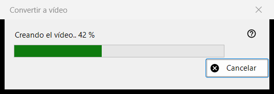
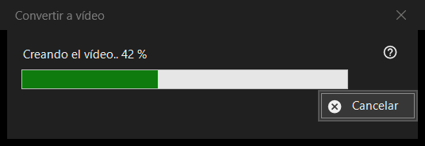

Convertir a vídeo
Para qué sirve
La ventana de progreso de Convertir a vídeo: convierte un GIF, WebP o APNG animado en un MP4 y después elimina el original. Se abre cuando confirma la conversión, permanece sobre el visor hasta que termina el trabajo y tiene un solo botón, Cancelar.


En este orden
- Muestre una imagen animada.
- Elija Convertir a vídeo.. en el menú de la imagen, o pulse el botón Convertir a vídeo de la barra de herramientas; ambos existen solo mientras hay una animación en pantalla, y no hay atajo de teclado.
- Lea la confirmación y pulse Convertir.
- Si le piden descargar FFmpeg, responda Sí.
- Observe la barra, o pulse Cancelar.
- El visor abre el nuevo MP4.
Los elementos
Inicio de la conversión
El comando se ofrece solo para animaciones, nunca para una imagen fija ni un vídeo, y el visor lo rechaza para un contenedor protegido o para un lugar en el que no se puede escribir junto al archivo. La reproducción se detiene cuando empieza el trabajo.
La confirmación
Dice, en esencia: el original se convertirá en el nuevo MP4 y se elimina de forma permanente, sin pasar por la Papelera. Si la animación tiene transparencia añade: La transparencia se rellenará de negro. Cancelar es la respuesta predeterminada. La casilla No volver a preguntar hasta cerrar el programa solo dura hasta que se cierra el visor; nunca se guarda.
FFmpeg
La conversión usa FFmpeg, que no forma parte del programa. Si falta, se le pregunta una sola vez por la descarga (la pregunta indica el tamaño; el archivo viene del sitio del proyecto, se guarda localmente y es software libre con licencia GPL). Si responde No, el proceso se detiene aquí y no se crea ni se elimina nada.
La ventana de progreso
El título dice Creando el vídeo.. con un porcentaje, y la barra lo sigue. Cuando no se conoce la duración de la animación, la barra solo se mueve de un lado a otro, sin número. Cancelar, la tecla Esc y el botón de cierre significan lo mismo: la ventana permanece un momento hasta que el codificador se ha detenido de verdad, luego se cierra y el visor informa Conversión cancelada. Mientras tanto no se puede usar el visor.
Lo que se obtiene
Un MP4 en la misma carpeta y con el mismo nombre (si el nombre está ocupado se añade un número entre paréntesis), con la velocidad de fotogramas de la animación, entre 1 y 50 fotogramas por segundo. Se escribe con un nombre temporal y se renombra cuando está listo. El original se elimina solo después de que el MP4 exista con su nombre definitivo y se haya comprobado que contiene toda la animación. La línea de estado dice Listo y el visor muestra el vídeo.
Cuando algo sale mal
El original se queda y la línea de estado indica el motivo: No se pudo crear el vídeo, con la causa; se creó el vídeo pero no se pudo borrar el original; o no se pudo comprobar que el vídeo esté completo y se conservó el original. Una ejecución fallida deja el original intacto, elimina el archivo temporal y escribe los detalles en el registro.